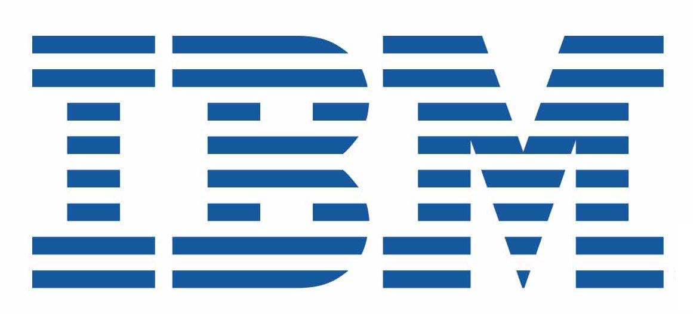
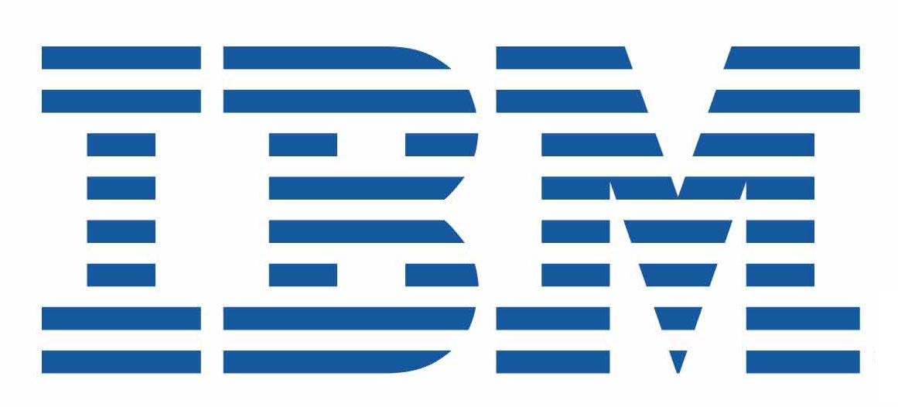

| |
PROGRAM
Master of Ceremony (MC):
- Prof. David Orsmond (Director of Policy and Communications, Center for Applied Artificial Intelligence AAI@MQ, Macquarie University)
9:00-9:25 Check-in, Registration, Coffee
9:25-9:30 Welcome to Country
- Kaveh Fanian (Security Services Client Executive, IBM Australia/NZ)
9:30-10:00 Opening
- Alexis Giral (Founding Director, Systemethix)
- Prof. Michael Sheng (Head, School of Computing, Macquarie University)
10:00-10:45 Keynote: Collective Learning and Artificial Intelligence
- Prof. Amin Beheshti (Director, Center for Applied Artificial Intelligence AAI@MQ, Macquarie University)
10:45-11:00 ARC Linkage Project: "Deep Pattern Mining for Brain Graph Analysis"
- Dr. Jia Wu (Research Director, Center for Applied Artificial Intelligence AAI@MQ, Macquarie University)
11:00-11:30 Coffee Break - Networking
11:30-11:45 Domain
- Pooyan Asgari (Chief Data Officer, Domain)
11:45-12:00 Systemethix
- Mike Mitz (Technical Consultant, Systemethix)
12:00-12:15 Microsoft
- Anthony Shaw (Principal Open Source Advocate (Python and Cloud), Microsoft Australia/NZ)
12:15-12:30 trUUth
- Mike Simpson (CEO, trUUth)
12:30-12:45 ITIC
- Steve Elbourn (Director, ITIC)
12:45-13:00 Prospa
- Jin Foo (Staff Data Scientist, Prospa)
13:00-14:00 Lunch and Networking
14:00-14:15 Neo4j
- Emil Pastor (Pre-Sales and Field Engineering, Neo4j)
14:15-14:30 Pearson
- Richard George (CEO, Faethm by Pearson)
14:30-14:45 Sydney Quantum Academy
- Pauline Woo (Engagement, Industry and Entrepreneurship Manager, Sydney Quantum Academy)
14:45-15:30 [Potential Risks and Ethics of AI]
Panel Chair: Prof. David Orsmond (Director of Policy and Communications, Center for Applied Artificial Intelligence AAI@MQ, Macquarie University)
Panelists:
15:30-16:00 Coffee, Discussion, and Networking
|
|

 
